ngscopeclient and libscopehal are based on a “filter graph" architecture internally. The filter graph is a directed acyclic graph with a set of source nodes (waveforms captured from hardware, loaded from a saved session, or generated numerically) and sink nodes (waveform views, protocol analyzer views, and statistics) connected by edges representing data flow.
A filter is simply an intermediate node in the graph, which takes input from zero or more waveform nodes and outputs a waveform which may be displayed, used as input to other filters, or both. A waveform is a series of data points which may represent voltages, digital samples, or arbitrarily complex protocol data structures.
As a result, there is no internal distinction between math functions, measurements, and protocol decodes, and it is possible to chain them arbitrarily. Consider the following example:
In this document we use the term “filter" consistently to avoid ambiguity.
A filter can take arbitrarily many inputs (vector or scalar values from the filter graph), arbitrarily many parameters (static scalar configuration settings), and outputs arbitrarily many vector or scalar outputs.
If the output signal is a multi-field type (as opposed to a single scalar, e.g. voltage, at each sample) the “Output Signal" section will include a table describing how various types of output data are displayed.
All filters with complex output use a standardized set of colors to display various types of data fields in a consistent manner. These colors are configurable under the Appearance / Decodes preferences category.
| Color name | Use case | Default Color |
| Address | Memory addresses | #ffff00 |
| Checksum Bad | Incorrect CRC/checksum | #ff0000 |
| Checksum OK | Valid CRC/checksum | #00ff00 |
| Control | Miscellaneous control data | #c000a0 |
| Data | User data | #336699 |
| Error | Malformed/unreadable data | #ff0000 |
| Idle | Inter-frame gaps | #404040 |
| Preamble | Preamble/sync words | #808080 |
Decodes the 128b/130b line code used by PCIe gen 3/4/5. This filter performs block alignment and descrambling, but no decoding of block contents.
128b/130b, as a close relative of 64b/66b, is a serial line code which divides transmitted data into 128-bit blocks and scrambles them with a LFSR, then appends a 2-bit type field (which is not scrambled) to each block for synchronization. Block synchronization depends on always having an edge in the type field so types 2’b00 and 2’b11 are disallowed.
For PCIe over 128b/130b, block type 2’b01 contains 128 bits of upper layer protocol data while block type 2’b10 contains an ordered set.
Note that this filter only performs block alignment and descrambling. No decoding or parsing is applied to the 128-bit blocks, other than searching for skip ordered sets (beginning with 0xaa) and using them for scrambler synchronization.
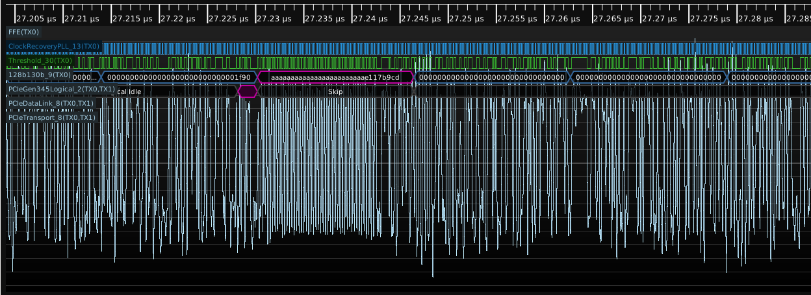
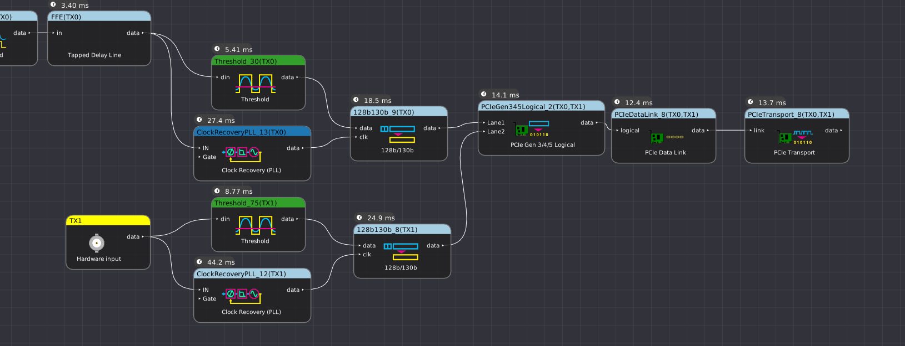
| Signal name | Type | Description |
| data | Digital | Serial 128b/130b data line |
| clk | Digital | DDR bit clock, typically generated by use of the Clock Recovery (PLL) filter on the input data. |
This filter takes no parameters.
The 128B/130B filter outputs a time series of 128B/130B sample objects. These consist of a control/data flag and a 128-bit data block.
| Stream name | Type | Description |
| data | Sparse protocol | Output decode |
| Type | Description | Color | Format |
| Ordered set | Block with type 2’b10 | Control | %032x |
| Data | Block with type 2’b01 | Data | %032x |
| Error | Block with type 2’b00 or 2’b11 | Error | %032x |
Measures the impedance of a DUT connected to a VNA in a 2-port shunt-through topology (VNA ports 1 and 2 connected, with DUT attached between the connection point and ground). This is commonly used for measuring very low impedance networks, such as power distribution networks.
(This filter description is a stub and will be expanded in the future)
Decodes the 64/66b line code used by 10Gbase-R and other serial protocols, as originally specified in IEEE 802.3 clause 49.2.
64b/66b is a serial line code which divides transmitted data into 64-bit blocks and scrambles them with a LFSR, then appends a 2-bit type field (which is not scrambled) to each block for synchronization. Block synchronization depends on always having an edge in the type field so types 2’b00 and 2’b11 are disallowed.
Note that this filter only performs block alignment and descrambling. No decoding is applied to the 64-bit blocks, as different upper-layer protocols assign different meaning to them. In 10Gbase-R, type 2’b01 denotes “64 bits of upper layer data" and type 2’b10 denotes “8-bit type field and 56 bits of data whose meaning depends on the type", however this is not universal and some other protocols use these fields for different purposes.
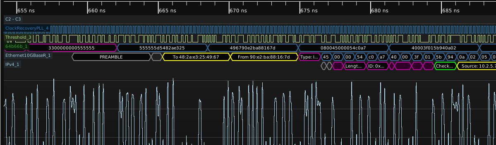
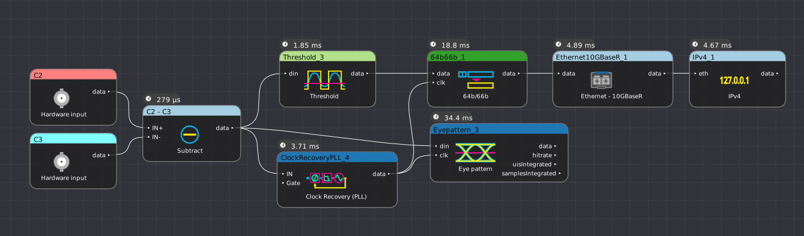
| Signal name | Type | Description |
| data | Digital | Serial 64b/66b data line |
| clk | Digital | DDR bit clock, typically generated by use of the Clock Recovery (PLL) filter on the input data. |
This filter takes no parameters.
The 64B/66B filter outputs a time series of 64B/66B sample objects. These consist of a control/data flag and a 64-bit data block.
| Stream name | Type | Description |
| data | Sparse protocol | Output decode |
| Type | Description | Color | Format |
| Control | Block with type 2’b10 | Control | %016x |
| Data | Block with type 2’b01 | Data | %016x |
| Error | Block with type 2’b00 or 2’b11 | Error | %016x |
Decodes the standard 8b/10b line code used by SGMII, 1000base-X, DisplayPort, JESD204A/B, PCIe gen 1/2, SATA, USB 3.0, and many other common serial protocols.
8b/10b is a dictionary based code which converts each byte of message data to a ten-bit code. In order to maintain DC balance and limit run length to a maximum of five identical bits in a row, all 8-bit input codes have one of:
The transmitter maintains a “running disparity" counter and chooses the appropriate coding for each symbol to ensure DC balance. There are twelve legal codes which are not needed for encoding data values; these are used to encode frame boundaries, idle/alignment sequences, and other control information.
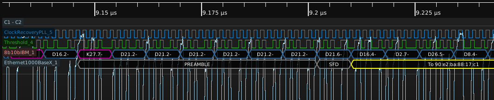
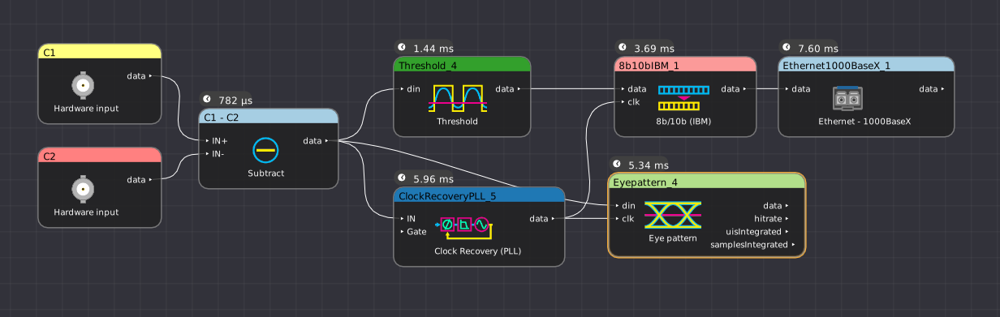
| Signal name | Type | Description |
| data | Digital | Serial 8b/10b data line |
| clk | Digital | DDR bit clock, typically generated by use of the Clock Recovery (PLL) filter on the input data. |
| Parameter name | Type | Description |
| Comma Search Window | Integer | Number of unit intervals to search when performing comma alignment. A larger window increases the probability of a correct lock if commas are infrequent, but significantly slows down the decode. The default is 20000 UI. |
| Display Format | Enum | Dotted (K28.5 D21.5): displays the 3b4b and
5b6b code blocks separately, with K or D prefix, as
well as the current running disparity. |
The 8B/10B filter outputs a time series of 8B/10B sample objects. These consist of a control/data flag, the current running disparity, and a byte of data.
| Stream name | Type | Description |
| data | Sparse protocol | Output decode |
| Type | Description | Color | Format |
| Control | Control codes | Control | K%d.%d+ or K%02x |
| Data | Upper layer protocol data | Data | D%d.%d+ or %02x |
| Error | Malformed data | Error | ERROR |
Decodes the 8-to-10 Transition Minimized Differential Signalling line code used in DVI and HDMI.
Like the 8B/10B (IBM) line code, TMDS is an 8-to-10 bit serial line code. TMDS, however, is designed to minimize the number of toggles in the data stream for EMC reasons, rendering it difficult to synchronize a CDR PLL to. As a result, HDMI and DVI provide a reference clock at the pixel clock rate (1/10 the serial data bit rate) along with the data stream to provide synchronization.
However, libscopeprotocols does not currently provide a frequency synthesis PLL which can recover a pixel clock from the 1/10 rate clock (scopehal:221). As a result, it is currently necessary to perform per-lane CDR on the TMDS data in order to decode it. This is sufficient for protocol decoding, but is not suitable for high-fidelity eye pattern measurements since skew/jitter between the TMDS lane and the clock lane will not be accounted for.
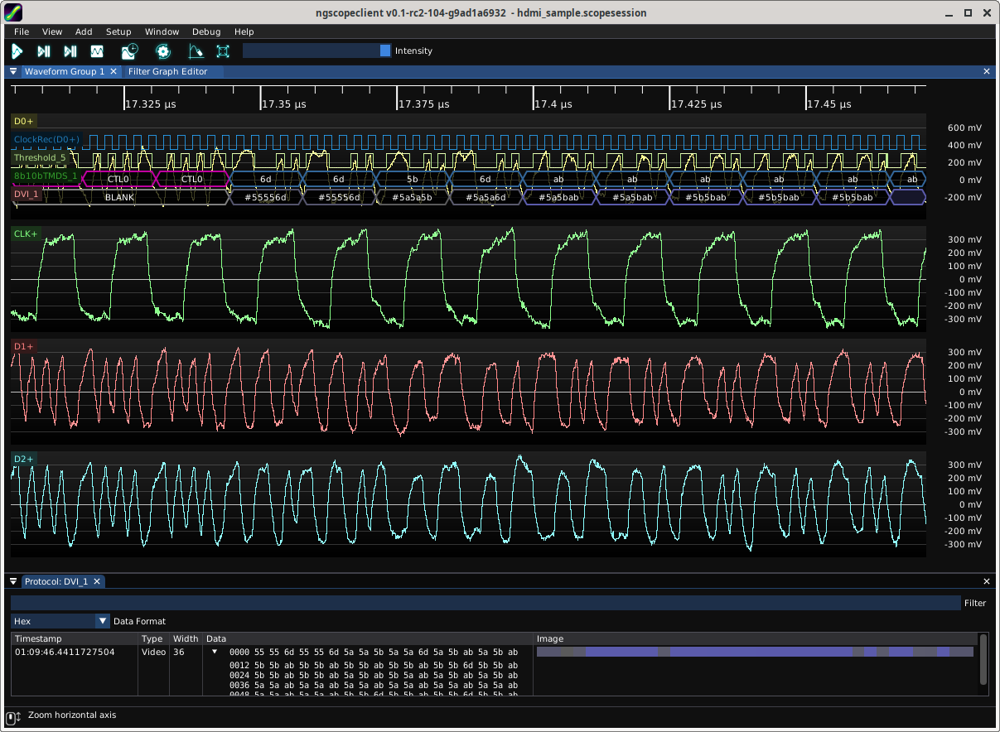
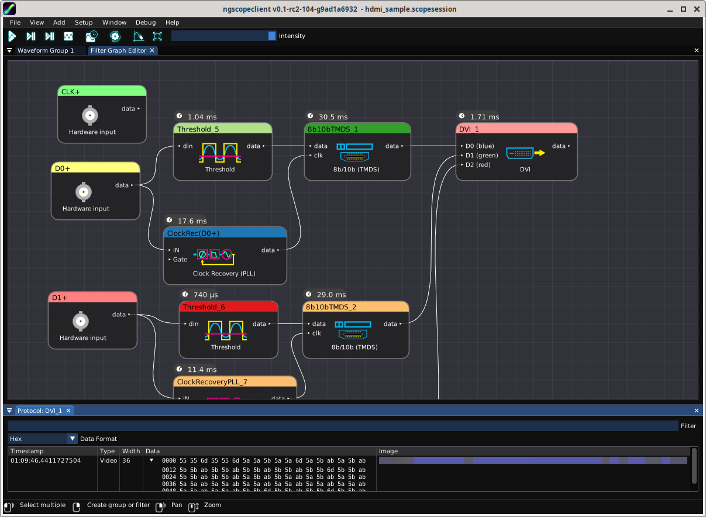
| Signal name | Type | Description |
| data | Digital | Serial TMDS data line |
| clk | Digital | DDR bit clock, typically generated by use of the Clock Recovery (PLL) filter on the input data. Note that this is 5x the rate of the pixel clock signal. |
| Parameter name | Type | Description |
| Lane Number | Integer | Lane number within the link (0-3) |
The TMDS filter outputs a time series of TMDS sample objects. These consist of a type field and a byte of data.
The output of the TMDS decode is commonly fed to the DVI or HDMI protocol decoders.
| Stream name | Type | Description |
| data | Sparse protocol | Output decode |
| Type | Description | Color | Format |
| Control | Control codes (H/V sync) | Control | CTL%d |
| Data | Pixel/island data | Data | %02x |
| Error | Malformed data | Error | ERROR |
| Guard band | HDMI data/video guard band | Preamble | GB |
Automatically removes a DC offset from an analog waveform by subtracting the average of all samples from each sample.
This filter should only be used in postprocessing already acquired data, or other situations in which AC coupling in the hardware (via an AC coupled probe, or coaxial DC block) is not possible.

| Signal name | Type | Description |
| din | Analog | Input waveform |
This filter takes no parameters.
This filter outputs an analog waveform with identical configuration (sparse or uniform) and sample rate to the input, vertically shifted to center the signal at zero volts.
| Stream name | Type | Description |
| data | Analog | Output decode |
Measures the Root Mean Square amplitude of the waveform after removing any DC offset. The DC offset is calculated by averaging all samples in the waveform.


| Signal name | Type | Description |
| din | Analog | Input waveform |
This filter takes no parameters.
This filter has two output streams.
| Stream name | Type | Description |
| trend | Sparse analog | One sample per cycle of the input waveform containing the RMS value across that cycle |
| avg | Scalar | RMS value across the entire waveform |
This filter adds two inputs. Either input may be a vector (waveform) or scalar.


| Signal name | Type | Description |
| a | Analog waveform or scalar | First input waveform |
| b | Analog waveform or scalar | Second input waveform |
This filter takes no parameters.
If both inputs are vectors, this filter outputs a waveform containing the pairwise sum; i.e. sample \(i\) of the output is \(a[i] + b[i]\). No resampling is performed on the inputs so incorrect or unexpected results may occur if they do not share the same timebase. Both inputs must be the same type (both sparse or both uniform), mixing sparse and uniform (even if the sample timestamps are the same) is not allowed.
If both inputs are scalars, this filter outputs their sum.
If one input is a vector and the other is a scalar, this filter outputs the sum of the scalar and each element of the waveform, i.e. sample \(i\) of the output is \(a + b[i]\) for the scalar + vector case and \(a[i] + b\) for the vector + scalar.
| Stream name | Type | Description |
| data | Analog | One sample per cycle of the input waveform containing the sum of the a and b inputs at that time |
Measures the area under the curve by integrating the data points. By default, area measured above ground is considered as positive and area measured below the ground is considered negative (“true area"). The negative area can also be considered as positive (“absolute area"). The measurement can be performed on the full record or on each cycle.
The following examples demonstrate usage of the filter on a sinusoid.
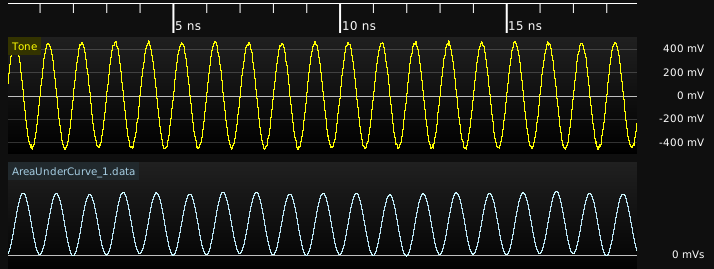
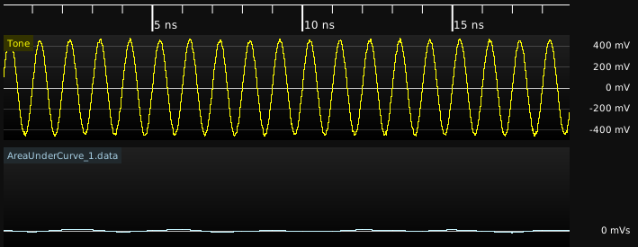
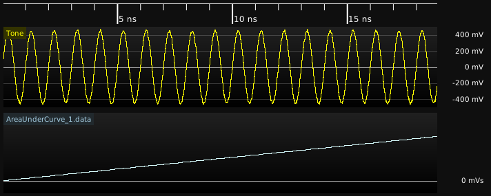
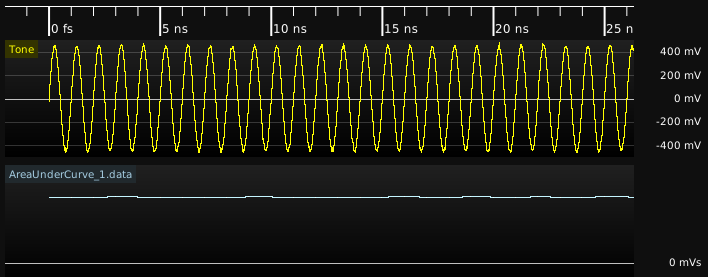
| Signal name | Type | Description |
| din | Analog | Input waveform |
| Parameter name | Type | Description |
| Measurement Type | Enum | Full Record: Measure the area of entire waveform |
| Area Type | Enum | True Area: Consider area below ground as negative
(integrate X) |
For full record measurement, this filter outputs a waveform indicating total area measured till the time on the waveform (integrating from zero to the current sample).
For per cycle measurement, this filter outputs a waveform representing area of each cycle (integrating between zero crossings).
Decodes SPI data traffic to one half of an ADL5205 variable gain amplifier.
TODO: Screenshot
| Signal name | Type | Description |
| spi | SPI bus | The SPI data bus |
This filter takes no parameters.
This filter outputs one ADL5205 sample object for each write transaction, formatted as “write: FA=2 dB, gain=8 dB".
This filter calculates the autocorrelation of an analog waveform. Autocorrelation is a measure of self-similarity calculated by multiplying the signal with a time-shifted copy of itself. In Fig. 26.19, strong peaks can be seen at multiples of the 8b/10b symbol rate.
For best performance, it is crucial to keep the maximum offset as low as possible, since filter run time is proportional to offset range multiplied by waveform length. A GPU implementation of this filter is planned for the future (scopehal:998) which will significantly increase speed.
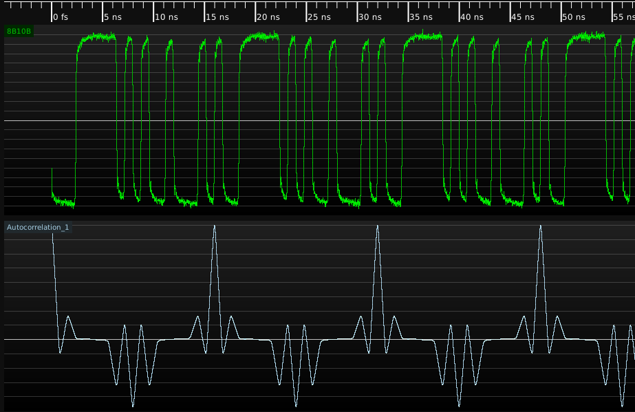
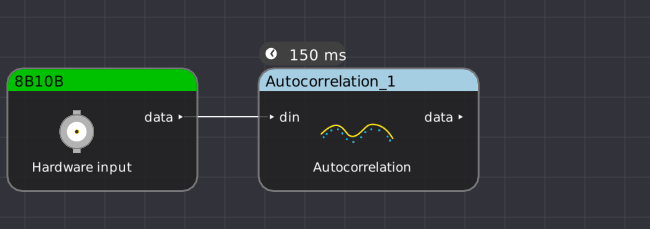
| Signal name | Type | Description |
| din | Uniform analog | Input waveform |
| Parameter name | Type | Description |
| Max offset | Integer | Maximum shift (in samples) |
This filter outputs an analog waveform with the same timebase as the input, one sample for each correlation offset.
| Stream name | Type | Description |
| data | Uniform analog | Autocorrelation waveform |
This filter calculates the average of its input.


| Signal name | Type | Description |
| in | Analog or scalar | Input waveform |
This filter takes no parameters.
| Signal name | Type | Description |
| latest | Scalar | Average of the filter’s current input |
| cumulative | Scalar | Average of all input since the last clear-sweeps |
| totalSamples | Scalar | Total number of integrated samples |
| totalWaveforms | Scalar | Total number of integrated waveforms |
Calculates the -3 dB bandwidth of a network, given the insertion loss magnitude.
The bandwidth is measured relative to a user-specified reference level; for example the bandwidth of a -20 dB attenuator can be measured by setting the reference level to -20 dB.


| Signal name | Type | Description |
| din | Analog | Input waveform (typically S21) |
| Parameter name | Type | Description |
| Reference Level | Float | Nominal (DC / mid band) insertion loss of the network |
This filter outputs a scalar containing the first frequency in the network which is at least -3 dB below the reference level. If the input waveform is entirely below this level, the lowest frequency in the input is returned. If the input waveform is entirely above this level, the highest frequency in the input is returned.
| Signal name | Type | Description |
| data | Scalar | Calculated bandwidth |
Calculates the base (average logical zero level) of a digital waveform.
It is most commonly used as a scalar to view the base of the entire waveform. At times, however, it may be useful to view the base waveform. For example, in Fig. 26.25, the vertical eye closure caused by channel ISI is readily apparent.
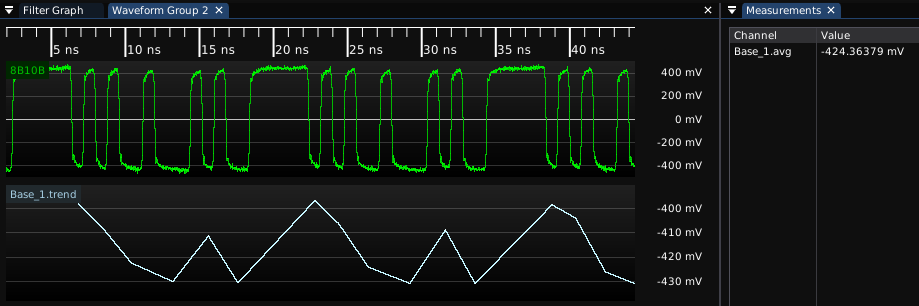
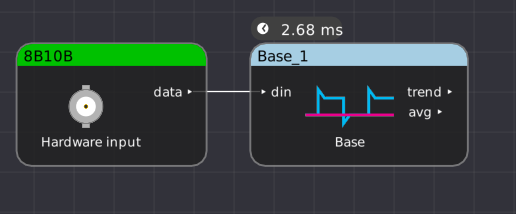
| Signal name | Type | Description |
| din | Analog | Input waveform |
This filter takes no parameters.
| Signal name | Type | Description |
| trend | Analog | Cycle-by-cycle base |
| avg | Scalar | Average base of the entire waveform |
Loads an Agilent / Keysight / Rigol binary waveform file.
This filter takes no inputs.
| Parameter name | Type | Description |
| BIN File | Filename | Path to the file being imported |
This filter outputs a uniformly sampled analog waveform for each channel in the file. The number of output streams is variable based on how many channels are present in the file.
NOTE: Waveform files generated by the Rigol MSO5000 and possibly other scopes using a similar firmware stack are known to be malformed and will not load properly. We are exploring ways to repair and load these damaged files in the future (scopehal:975).
Measures the burst width of each burst in a waveform. A burst is a sequence of adjacent crossings of the average value of the waveform (for analog waveforms) or toggles (for digital waveforms).
The burst width is the duration of this sequence. Bursts are separated by a user-defined idle time that can be provided as a parameter to this filter. The measurement is made on each burst in the waveform.
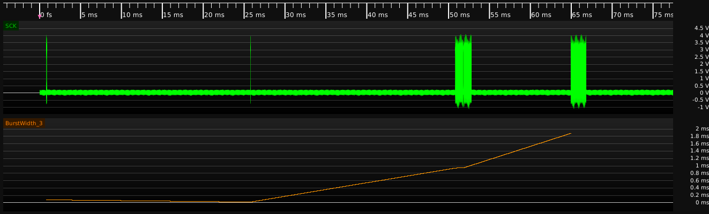
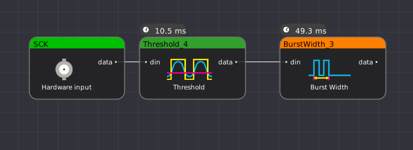
| Signal name | Type | Description |
| din | Analog | Input waveform |
| Parameter name | Type | Description |
| Idle Time | Integer | Minimum idle time with no toggles, before declaring start of a new burst |
This filter outputs a sparse analog waveform with one sample for each burst in the input signal.
Computes a “spectrogram" visualization of bus activity with address on the Y axis and time on the X axis, in order to identify patterns in memory or bus activity.
The current version only supports CAN bus however other common memory interfaces will be added in the future.
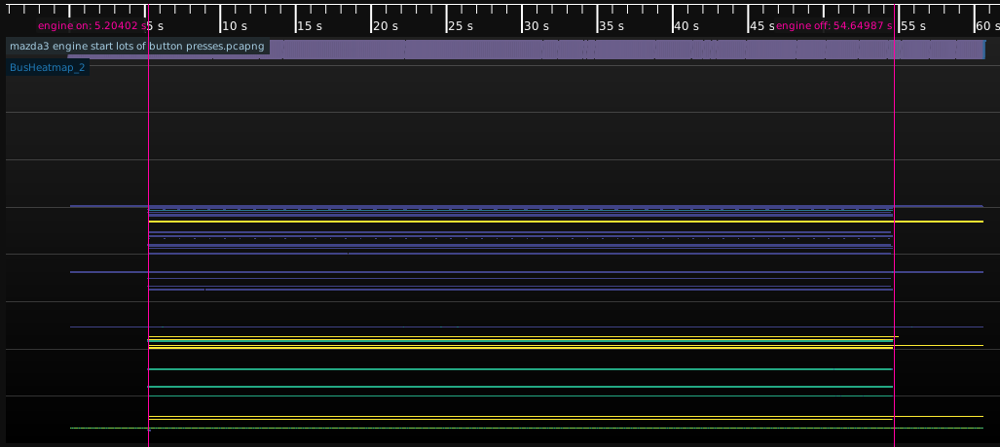
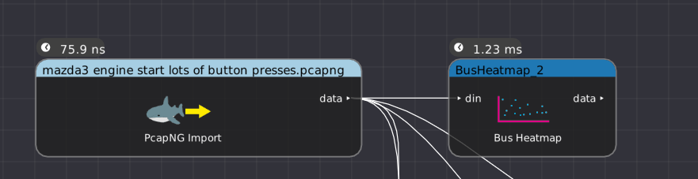
| Parameter name | Type | Description |
| Max Address | Integer | Maximum address to display in the plot |
| X Bin Size | Integer | Width of each pixel in the X axis (timebase units) |
| Y Bin Size | Integer | Number of addresses to merge into each pixel in the Y axis |
This filter outputs a 2D density plot that is (max address) / (y bin size) pixels high and (memory depth) / (x bin size) pixels wide, spanning the entire duration of the input and the full address range requested.
All packets within the input waveform have the start time and address rounded to the closest bin in X and Y. The corresponding pixel in the integration buffer is incremented, then the final waveform is normalized to cover the full range of the selected color ramp.
| Signal name | Type | Description |
| data | Density map | Calculated heatmap |
Decodes the Control Area Network (CAN) bus, commonly used in vehicle control systems. Both standard (11 bit) and extended (29 bit) IDs are supported.
CAN-FD frames are detected and flagged as such, but the current decode cannot parse them fully. Full support is planned (scopehal:334).
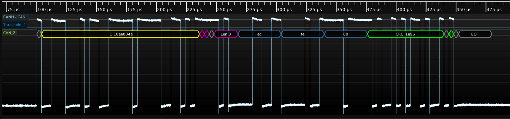
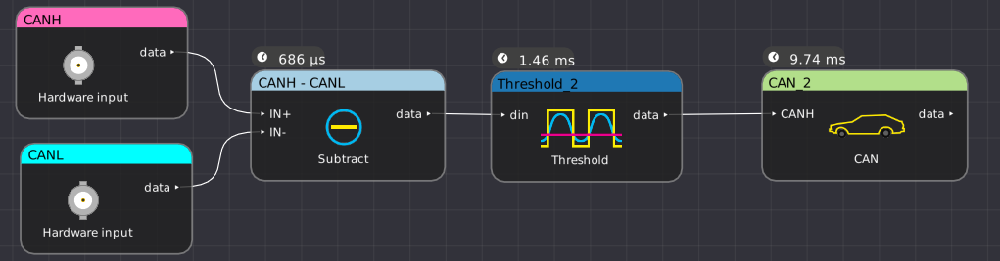

| Signal name | Type | Description |
| CANH | Digital | Thresholded CANH (or CANH-CANL) signal |
| Parameter name | Type | Description |
| Bit Rate | Integer | Bit rate of the bus (most commonly 250 or 500 Kbps) |
The CAN bus decode outputs a time series of CAN sample objects. These consist of a type field and a byte of data.
| Signal name | Type | Description |
| data | Protocol | Decoded waveform data |
| Type | Description | Color | Format |
| Control | Start of frame | Preamble | SOF |
| ID | CAN ID | Address | ID %x |
| RTR | Remote Transmission Request | Control | DATA | REQ |
| FD mode | CAN-FD mode | Control | FD | STD |
| R0 | Reserved bits | Preamble | RSVD |
| DLC | Data Length Code | Control | Len 3 |
| Data | Payload data | Data | %02x |
| Valid CRC | Good checksum | Checksum OK | CRC: %04x |
| Invalid CRC | Bad checksum | Checksum Bad | CRC: %04x |
| CRC delimiter | Bus turnaround | Preamble | CRC DELIM |
| ACK | Acknowledgement | Checksum OK | ACK |
| NAK | Missing acknowledgement | Checksum Bad | NAK |
| ACK delimiter | Bus turnaround | Preamble | ACK DELIM |
| EOF | End of frame | Preamble | EOF |
TODO
This filter adds a protocol analyzer table to CAN data sources which do not natively provide one.
The most common use of this block is processing packets acquired from the socketcan driver, since the current libscopehal object model does not allow instruments to output protocol packets directly.
(This filter description is a stub and will be expanded in the future)
Extracts a bit-masked value from a stream of CAN bus packets and outputs a Boolean waveform.
The typical use of this is to display a Boolean control or status signal, such as turn signal indicator state, as a waveform.
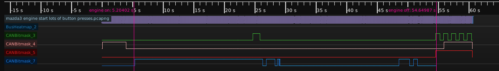
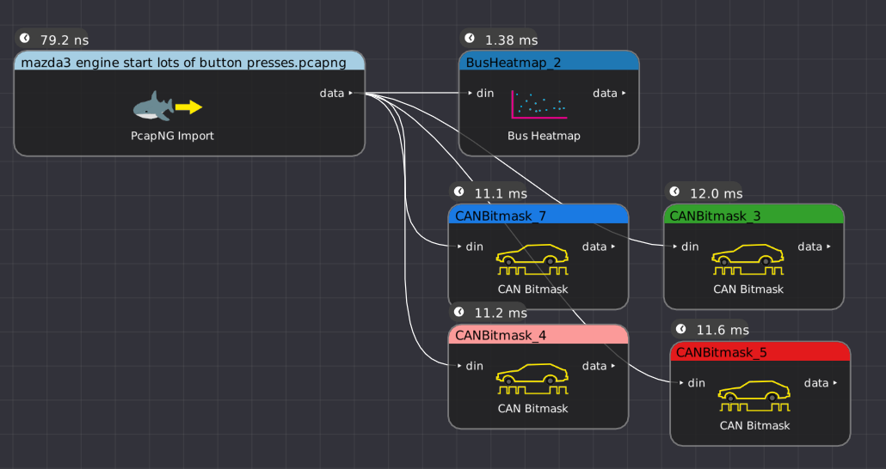
| Signal name | Type | Description |
| din | CAN bus | Input waveform |
| Parameter name | Type | Description |
| Bus Address | Hex | CAN ID to match |
| Initial Value | Bool | Starting value to display before the first matching CAN packet is seen |
| Pattern Bitmask | Hex | 64-bit mask for selecting bits within the CAN packet |
| Pattern Target | Hex | 64-bit pattern to look for |
This filter outputs a sparse digital waveform with one sample per CAN packet matching the target CAN ID.
If the packet value, interpreted as a 64-bit big endian integer, equals the target when ANDed with the bitmask, the output is 1. Otherwise the output is zero.
Loads a log file generated by the candump utility from the Linux can-utils software package and displays it as a series of CAN packets.
Example capture command: candump -l can0
(This filter description is a stub and will be expanded in the future)
This filter models the effects of applying an arbitrary channel, described via a single path of a set of S-parameters, to a waveform. Fig. 26.36 shows the result of passing a 10.3125 Gbps PRBS through S21 of a 300mm FR-4 channel with insertion loss of approximately 7 dB at the fundamental. The ISI and phase shift introduced by the channel can be seen clearly.
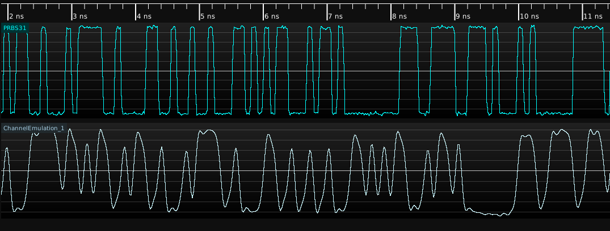
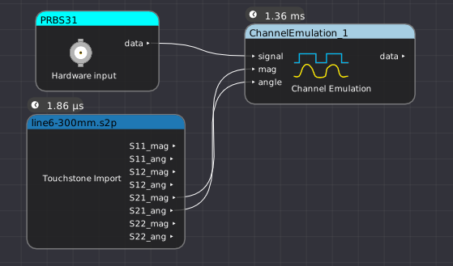
The channel model works in the frequency domain. An FFT is performed on the input, then each complex point is scaled by the interpolated magnitude and rotated by the phase, then an inverse FFT is used to transform the signal back into the time domain.
The group delay of the channel is then estimated and samples are discarded from the beginning of the waveform to prevent causality violations. For example, when performing channel emulation using a network with a 1ns group delay, the output waveform will begin 1ns after the input (since the channel output before this depends on input samples before the start of the waveform). Note that the automatic group delay estimation uses points from roughly the center of the S-parameter dataset in the current implementation; channels which do not have a significant passband around this frequency will give incorrect group delay estimates. The “Group Delay Truncation Mode" parameter can be set to manual in this case, selecting the “Group Delay Truncation" parameter instead of the automatically estimated value.
By choosing appropriate stimulus waveforms and S-parameter paths, many different kinds of analysis can be performed. For example, given a 4-port network describing two transmission lines (with ports 1 and 3 as input, and 2 and 4 as output):
Note that only the single S-parameter path provided is considered, and reflections elsewhere in the system are not modeled. As a result, multiple applications of this filter to emulate a large circuit piecewise (for example, a cable followed by a fixture) may give inaccurate results since reflections between the two networks are not considered. In this situation, it is preferable to use a circuit simulator or the S-Parameter Cascade filter to calculate combined S-parameters of the entire circuit and then perform the channel emulation once.
| Signal name | Type | Description |
| signal | Analog | Input waveform |
| mag | Analog | S-parameter magnitude channel |
| ang | Analog | S-parameter angle channel |
| Parameter name | Type | Description |
| Max Gain | Float | Maximum gain to apply |
| Group Delay Truncation | Int | Group delay override for manual mode |
| Group Delay Truncation Mode | Enum | Specifies manual or automatically estimated group delay |
This filter outputs an analog waveform with the same timebase as the input, with the emulated channel applied.
This filter limits the maximum or minimum value of a waveform to a given value. It can be configured to clip “above" in which case it imposes an upper limit or “below" in which case it imposes a lower limit.
Clipping both top and bottom is not currently supported, however two instances of the filter can be chained to achieve the same result.
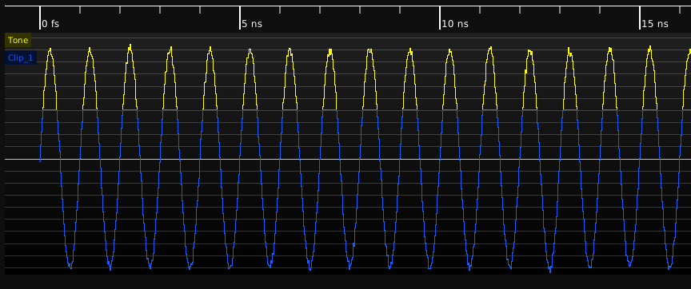
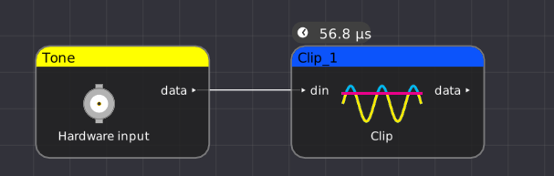
| Signal name | Type | Description |
| din | Analog | Input waveform |
| Parameter name | Type | Description |
| Behavior | Enum | Select between clipping values above or below selected value |
| Level | Float | Maximum/minimum signal level |
This filter outputs an analog waveform with the same timebase as the input, clipped as specified by the parameters.
Extracts a double-rate clock from a MIPI D-PHY clock+data stream, which is gated to only toggle when the data input is in HS mode. This can be used for generating eye patterns of the HS-mode data.
(This filter description is a stub and will be expanded in the future)
This filter uses a PLL to recover a clock from a serial NRZ data stream. The recovered clock is double-rate and phased 90°with respect to the data, such that the data can be sampled directly by both edges of the PLL output clock.
When the optional clock gating input is low, the output does not toggle and any edges in the input signal are ignored. This is most commonly used as a squelch to disable decoding and eye processing in between bursts of data. As soon as the gate goes high, the PLL will instantly phase shift the internal NCO to align with the next transition in the input signal and then begin running closed-loop continuing from the previous NCO frequency value.
This filter uses a single threshold suitable for NRZ inputs. Using either the upper or lower level is also sufficient for MLT-3 since the +1 to -1 crossing is disallowed, but attempting to do the same on a PAM signal will add data-dependent jitter (since the slew rate for, for example, a -2 to +2 transition is different than that for a -1 to +1 transition). For proper results on PAM signals, use the PAM edge detector filter to find level crossings and then apply the CDR to the detected transitions.
The current implementation of this filter uses a simple bang-bang control loop which is reasonably fast and provides generally acceptable jitter transfer performance for most purposes (passing high frequency jitter but rejecting spread spectrum modulation), but does not precisely match the jitter transfer characteristics of any particular serial data standard. In the future, several standard PLL responses including the Fibre Channel golden PLL (scopehal:163) will be supported as options.
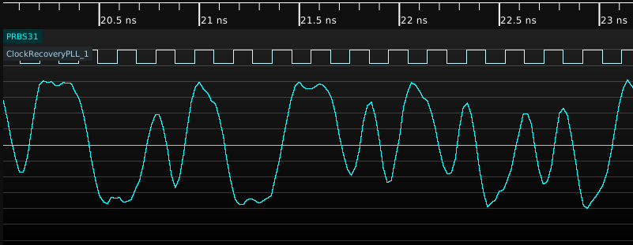
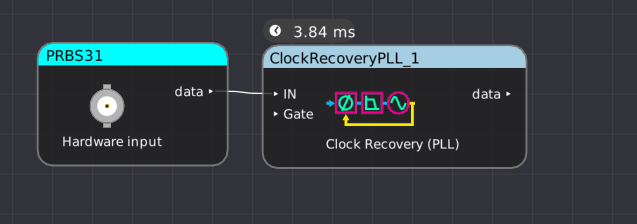
| Signal name | Type | Description |
| IN | Analog or digital | Input waveform |
| Gate | Digital | Clock enable signal. Leave unconnected to disable gating. |
| Parameter name | Type | Description |
| Symbol rate | Float | Symbol rate, in Hz |
| Threshold | Float | Decision threshold for the edge detector, in volts. Ignored for digital inputs. |
This filter outputs an digital waveform with one sample per transition of the recovered clock.
This filter uses a DLL to recover a sampling clock from UART or similar protocol at a known baud rate. The single-rate recovered clock idles low and toggles for each bit in each frame and is phased 90°with respect to data, such that each bit can be sampled on the rising edge of the DLL output clock. This filter can be used for generating an eye pattern of the serial signal.
The current implementation limits support to serial protocols with 10 bits/symbols per frame. Consider using the PLL-based clock recovery for unsupported serial formats if applicable.
The current implementation does not synchronize by aligning falling clock edges with symbol edges.

| Signal name | Type | Description |
| din | Analog | Input waveform |
| Parameter name | Type | Description |
| Baud rate | Float | Symbol rate, in bps |
| Threshold | Float | Decision threshold for the edge detector, in volts |
This filter outputs a digital waveform with the sampling clock recovered from the analog stream.
Loads waveform data from a raw binary file containing I/Q samples in one of several formats. Regardless of sample format, the samples must be interleaved in I-Q-I-Q order.
Supported formats (native endianness, no byte swapping is performed):
Integer sample data is rescaled to a nominal +/- 1V p-p. Floating point data is not rescaled and the raw floating point values are output as volts.
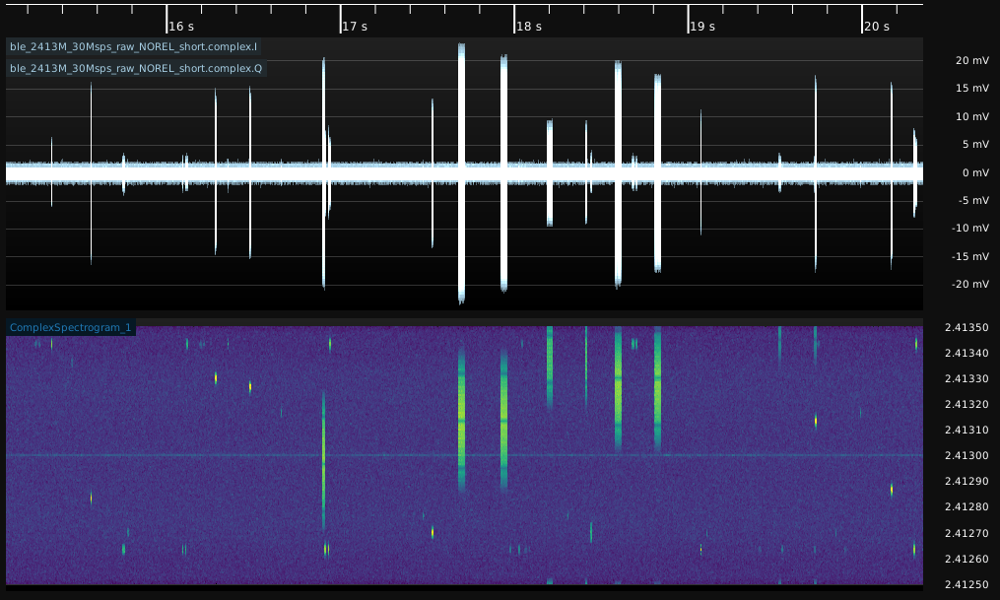
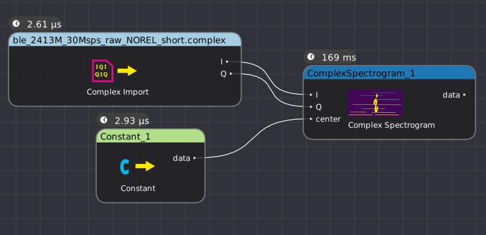
This filter takes no inputs.
| Parameter name | Type | Description |
| Complex File | String | Path to the input file |
| File Format | Enum | Data type of the samples |
| Sample Rate | Int | Sampling frequency |
This filter outputs two streams named “I" and “Q" containing the I/Q waveform data.
Plots a spectrogram of complex I/Q data.
| Parameter name | Type | Description |
| I | Analog | Real part of input signal |
| Q | Analog | Imaginary part of input signal |
| center | Analog scalar | IF frequency to display the zero point of the complex waveform at |
| Parameter name | Type | Description |
| FFT length | Int | Number of FFT points per spectrogram |
| Range Max | Float | Amplitude, in dBm, to use as the full-scale intensity value |
| Range Min | Float | Amplitude, in dBm, to use as the minimum-scale intensity value |
| Window | Enum | Window function to use for the FFTs |
This filter outputs a 2D density plot showing amplitude vs frequency and time.
This filter outputs a scalar with a constant value, which may be used as input to other filter graph blocks.
This filter takes no inputs.
| Parameter name | Type | Description |
| Value | Float | The value to output |
| Unit | Enum | Data type of the constant value |
This filter outputs a single scalar with a constant value.
This filter takes I/Q streams and a double-rate recovered symbol clock and outputs a constellation diagram.
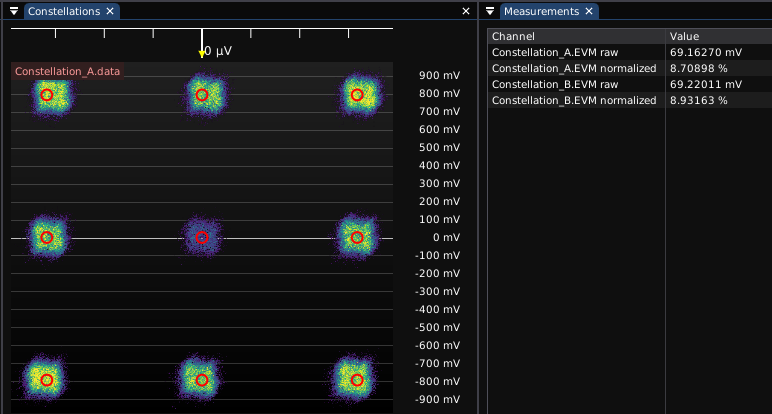
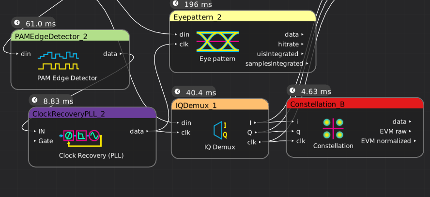
| Parameter name | Type | Description |
| I | Analog | Real part of input signal |
| Q | Analog | Imaginary part of input signal |
| clk | Digital | Recovered symbol clock |
| Parameter name | Type | Description |
| Center I | Float | Voltage for center of the constellation in I axis |
| Center Q | Float | Voltage for center of the constellation in Q axis |
| Modulation | Enum | Modulation to use for EVM calculations |
| Range | Float | Nominal full-scale range |
This filter outputs a 2D density plot showing amplitude vs frequency and time, as well as error vector magnitude (EVM) measurements.
| Parameter name | Type | Description |
| data | Density plot | Constellation image |
| EVM raw | Analog scalar | Raw EVM in volts |
| EVM normalized | Analog scalar | Normalized EVM in percent |
Given waveforms from both coupled ports of a dual directional coupler and the S-parameters of the coupler, de-embeds the coupler response in order to recover the forward and reverse waveforms.
NOTE: The current implementation of this filter requires the VK_KHR_push_descriptor Vulkan extension. A fallback implementation for GPUs without this extension will be added at some point in the future.
Both coupled-port waveforms must be the same sample rate, memory depth, and de-skewed relative to one another.
This filter uses a multi-step algorithm to de-embed both the insertion loss of the coupled path and enhance the apparent directivity of the coupler:
| Signal name | Type | Description |
| forward | Analog | Forward coupled port waveform |
| reverse | Analog | Reverse coupled port waveform |
| forwardCoupMag | Analog | Magnitude response of forward coupled path |
| forwardCoupAng | Analog | Angle response of forward coupled path |
| reverseCoupMag | Analog | Magnitude response of reverse coupled path |
| reverseCoupAng | Analog | Angle response of reverse coupled path |
| forwardLeakMag | Analog | Magnitude response of forward leakage path |
| forwardLeakAng | Analog | Angle response of forward leakage path |
| reverseLeakMag | Analog | Magnitude response of reverse leakage path |
| reverseLeakAng | Analog | Angle response of reverse leakage path |
Saves waveform data to a comma-separated-value file.
The Update Mode parameter specifies how and when the file is modified:
This filter takes a variable number of inputs, named “column1", “column2", etc, which may be of analog, digital, or arbitrary protocol type. 2D persistence maps are not supported.
| Parameter name | Type | Description |
| File name | String | Path to the CSV file |
| Update mode | Enum | Specifies how and when to update the file) |
This filter stores its output to a file and has no filter graph output ports.
Loads waveform data from a comma-separated-value file.
(This filter description is a stub and will be expanded in the future)
Converts a voltage waveform acquired across a known resistance into a current waveform.
(This filter description is a stub and will be expanded in the future)
Calculates the peak-to-peak data-dependent jitter for a serial data stream.
This filter uses the non-repeating-pattern method, which allows DDJ to be computed for arbitrary waveforms rather than requiring a short, repeating PRBS. In this method, per-UI jitter (TIE) measurements are split across \(2^n\) histogram bins, one for each possible combination of the preceding \(n\) bits. The jitter samples for each bin are then averaged to remove the effects of other jitter, leaving only the DDJ. The final DDJ value is reported as the difference between the minimum and maximum histogram bins.
The current implementation uses a fixed window size of \(n=8\) UI. If the channel has significant memory effects or reflections with delays of more than 8 UI, DDJ maybe underestimated.
The current implementation only supports NRZ signals and cannot measure DDJ for MLT3 or PAM waveforms.
| Signal name | Type | Description |
| TIE | Analog | TIE waveform computed by the TIE filter |
| Threshold | Digital | Thresholded digital sample values |
| Clock | Digital | Double rate, center aligned sampling clock for threshold values |
This filter takes no parameters.
This filter outputs an analog waveform with a single sample containing the computed DDJ value.
Additionally, the raw DDJ histogram is stored internally and may be accessed by other filters via the C++ API. There is currently no way to display the histogram content.
Decodes the command bus for first-generation DDR SDRAM.
(This filter description is a stub and will be expanded in the future)
Decodes the command bus for third-generation DDR SDRAM.
(This filter description is a stub and will be expanded in the future)
Applies the inverse of a channel (described by a single path in an S-parameter dataset, normally \(S_{21}\)) to a signal, in order to calculate what the waveform would have looked like at the input to a cable, fixture, etc. given the signal seen at the output.
The channel model works in the frequency domain. An FFT is performed on the input, then each complex point is scaled by the interpolated magnitude and rotated by the phase, then an inverse FFT is used to transform the signal back into the time domain.
The group delay of the channel is then estimated and samples are discarded from the end of the waveform to prevent causality violations. For example, when performing a de-embed using a network with a 1ns group delay, the output waveform will end 1ns before the input does (since the channel output after this depends on input samples after the end of the stimulus waveform). Note that the automatic group delay estimation uses points from roughly the center of the S-parameter dataset in the current implementation; channels which do not have a significant passband around this frequency will give incorrect group delay estimates. The “Group Delay Truncation Mode" parameter can be set to manual in this case, selecting the “Group Delay Truncation" parameter instead of the automatically estimated value.
Note that only the single S-parameter path provided is considered, and reflections elsewhere in the system are not modeled. As a result, multiple applications of this filter to de-embed a large circuit piecewise (for example, a cable followed by a probe) may give inaccurate results since reflections between the two networks are not considered. In this situation, it is preferable to use a circuit simulator or the S-Parameter Cascade filter to calculate combined S-parameters of the entire circuit and then perform a single de-embed.
The maximum gain the de-embed applies is capped (default 20 dB) in order to prevent amplifying noise outside the passband of the network being de-embedded.
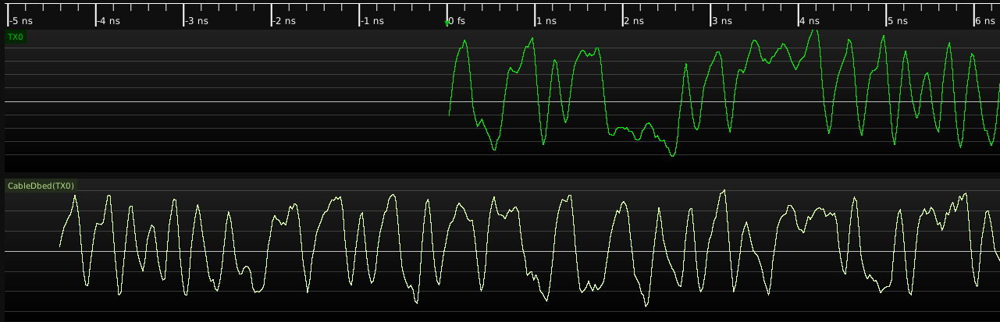
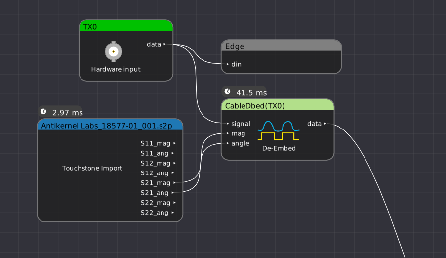
| Signal name | Type | Description |
| signal | Analog | Input waveform |
| mag | Analog | S-parameter magnitude channel |
| ang | Analog | S-parameter angle channel |
| Parameter name | Type | Description |
| Max Gain | Float | Maximum gain to apply |
| Group Delay Truncation | Int | Group delay override for manual mode |
| Group Delay Truncation Mode | Enum | Specifies manual or automatically estimated group delay |
This filter outputs an analog waveform with the same timebase as the input, with the emulated channel applied.
Moves an analog waveform earlier or later in time to compensate for trigger offsets, probe length mismatch, etc. It is generally preferable to deskew using the skew adjustment on the channel during acquisition if supported by hardware; this filter is provided for correction in postprocessing or for use with instruments that do not have hardware deskew capability.
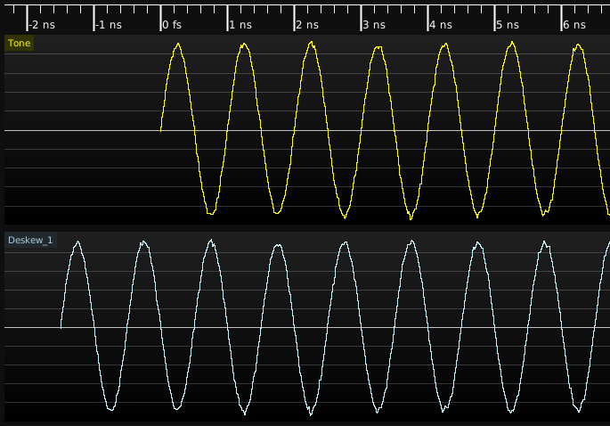
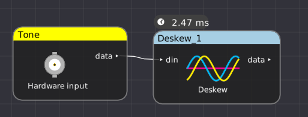
| Signal name | Type | Description |
| din | Analog | Input waveform |
| Parameter name | Type | Description |
| Skew | Float | Time offset to shift the waveform |
This filter outputs an analog waveform with one sample for each sample in the input, phase shifted by the requested offset.
Convert a digital signal (and associated clock) to an analog NRZ waveform. This filter uses a simplistic piecewise linear rise/fall time model: the output stays at the logic low/high voltage until the input changes, then ramps at a constant rate to the new value. For more accurate modeling of edge shape use the IBIS Driver filter with the appropriate IBIS model for your DUT.
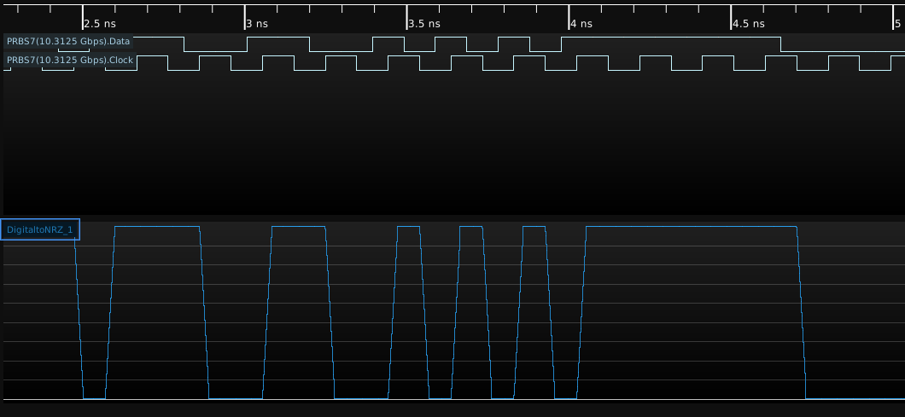
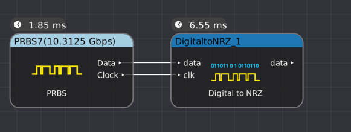
| Signal name | Type | Description |
| data | Digital | Digital data to send |
| clk | Digital | Clock for data |
| Parameter name | Type | Description |
| Level 0 | Float | Voltage to send when the input is a logic 0 |
| Level 1 | Float | Voltage to send when the input is a logic 1 |
| Sample Rate | Int | Sample rate for the generated waveform |
| Transition Time | Int | Rising and falling edge time |
This filter outputs an analog NRZ version of the provided digital input, sampled uniformly at the specified rate.
Convert a digital signal (and associated clock) to an analog PAM-4 waveform. This filter uses a simplistic piecewise linear rise/fall time model: the output stays at the current symbol’s voltage until the input changes, then ramps at a constant rate to the new value. For more accurate modeling of edge shape use the IBIS Driver filter with the appropriate IBIS model for your DUT.
The input data is a digital serial bit stream at twice the PAM4 symbol rate. Two consecutive input bits map to a single PAM-4 output sample.
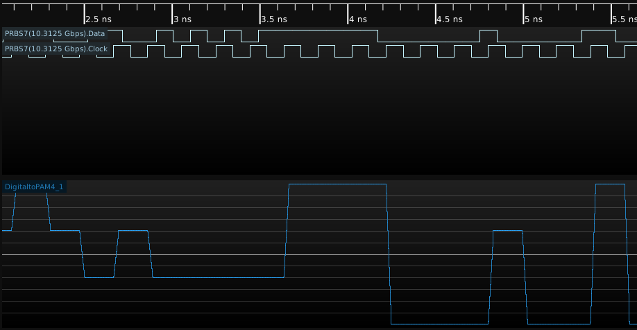
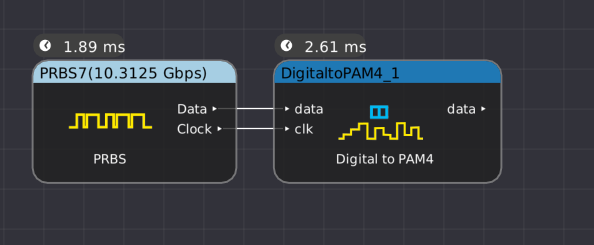
| Signal name | Type | Description |
| data | Digital | Serial digital data to send |
| clk | Digital | Clock for data |
| Parameter name | Type | Description |
| Level 00 | Float | Voltage to send when the input is a logic 0-0 |
| Level 01 | Float | Voltage to send when the input is a logic 0-1 |
| Level 10 | Float | Voltage to send when the input is a logic 1-0 |
| Level 11 | Float | Voltage to send when the input is a logic 1-1 |
| Sample Rate | Int | Sample rate for the generated waveform |
| Transition Time | Int | Rising and falling edge time |
This filter outputs an analog PAM-4 version of the provided digital input, sampled uniformly at the specified rate.
Decodes the Auxiliary Channel of DisplayPort
(This filter description is a stub and will be expanded in the future)
Divides one waveform by another.
(This filter description is a stub and will be expanded in the future)
Performs digital downconversion by mixing a directly sampled RF signal with a two-phase local oscillator, then outputs the downconverted signal. No LO rejection filtering or decimation is performed.
(This filter description is a stub and will be expanded in the future)
Optionally low-pass filters a signal to prevent aliasing, then decimates by an integer factor.
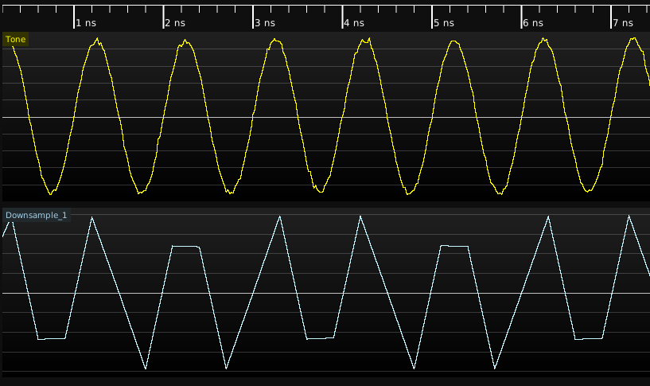
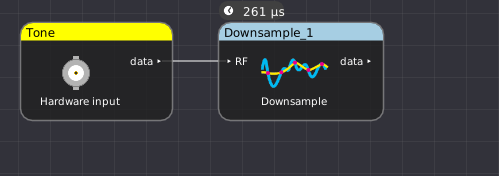
| Signal name | Type | Description |
| RF | Analog | Input waveform |
| Parameter name | Type | Description |
| Antialiasing Filter | Bool | If true, applies a low-pass filter to the input before decimating |
| Downsample Factor | Int | Divisor for output sample rate |
This filter outputs a decimated version of the input.
Given a DRAM command bus and a DQS strobe, produce separate gated DQ clock streams for read and write bursts.
(This filter description is a stub and will be expanded in the future)
Calculates \(T_{rcd}\) (RAS-to-CAS delay) for each newly opened row in a DRAM command bus stream.
(This filter description is a stub and will be expanded in the future)
Calculates \(T_{rfc}\) (refresh-to-refresh delay) for each refresh operation in a DRAM command bus stream.
(This filter description is a stub and will be expanded in the future)
Calculates the duty cycle of a bimodal waveform. The duty cycle is defined as the percentage of time spent in the high state divided by the period.
Analog waveforms are automatically thresholded at the average voltage.
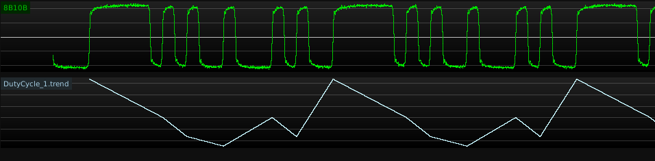
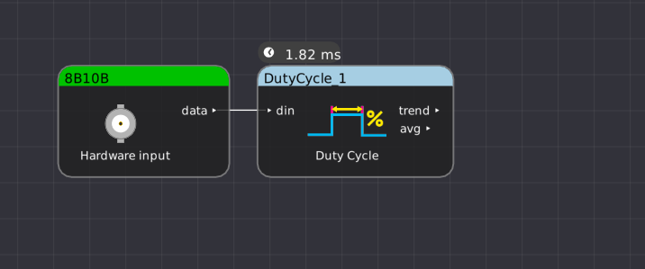
| Signal name | Type | Description |
| din | Analog or digital | Input waveform |
This filter takes no parameters.
| Signal name | Type | Description |
| trend | Analog | Instantaneous duty cycle of each cycle of the waveform |
| avg | Analog scalar | Average duty cycle over the entire input signal |
Decodes Digital Visual Interface (DVI) video signals.
| Signal name | Type | Description |
| D0 (blue) | Protocol | TMDS decode for lane 0 |
| D1 (green) | Protocol | TMDS decode for lane 1 |
| D2 (blue) | Protocol | TMDS decode for lane 2 |
This filter takes no parameters.
The output is a sequence of DVI scan lines including RGB pixel values.
Adds pre/de emphasis to a signal by convolving it with a tapped delay line filter. This introduces a small phase shift.
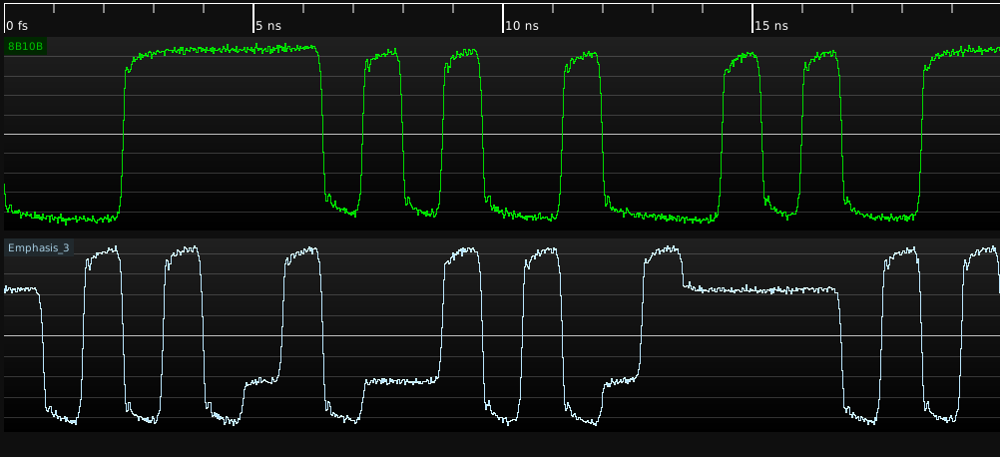
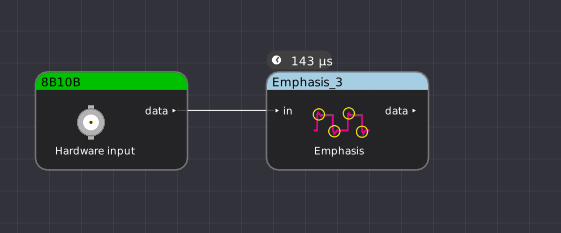
| Signal name | Type | Description |
| in | Analog | Input waveform |
| Parameter name | Type | Description |
| Data Rate | Int | Data rate, in symbols per second |
| Emphasis Amount | Float | Amount of pre/de emphasis to add, in dB |
| Emphasis Type | Enum | Type of emphasis to add (pre-emphasis or de-emphasis) |
The output is an analog signal with the requested amount of emphasis applied.
Removes pre/de emphasis from a signal by convolving it with a tapped delay line filter. This introduces a small phase shift.
This filter is typically used when probing a signal at the transmitter which has a high level of emphasis. Removing the emphasis can increase the eye opening in the digitized signal and make interpretation easier.
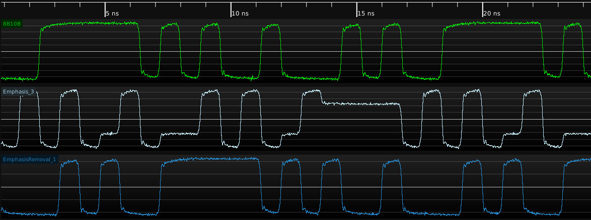
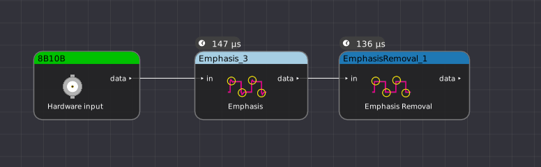
| Signal name | Type | Description |
| in | Analog | Input waveform |
| Parameter name | Type | Description |
| Data Rate | Int | Data rate, in symbols per second |
| Emphasis Amount | Float | Amount of pre/de emphasis to remove, in dB |
| Emphasis Type | Enum | Type of emphasis to remove (pre-emphasis or de-emphasis) |
The output is an analog signal with the requested amount of emphasis removed.
Applies a FIR low-pass filter to a signal to increase the vertical resolution and reduce noise at the cost of reduced bandwidth. This technique assumes a small amount of Gaussian noise is present in the input waveform, such that a signal whose true value is midway between two ADC codes will randomly fluctuate between the two quantized values, with an average equal to the true value.
Each half bit of resolution reduces the bandwidth by an additional factor of two beyond the Nyquist limit. For example, a 1.5 bit resolution improvement reduces the bandwith to Fnyquist / 8. The filter properties dialog displays the calculated -3 dB bandwidth based on the current input sample rate.
| Signal name | Type | Description |
| in | Analog | Input signal |
| Parameter name | Type | Description |
| Bits | Enum | Number of additional bits of resolution to add |
Finds the minimum and maximum of each sample in the input over time, and outputs them as separate streams.
(This filter description is a stub and will be expanded in the future)
Decodes the 10base-T Ethernet PCS/PMA as specified in IEEE 802.3-2018 clause 14.
(This filter description is a stub and will be expanded in the future)
Decodes the 100base-T1 single-pair / automotive Ethernet PMA/PCS, as specified in IEEE 802.3-2018 clause 96.
(This filter description is a stub and will be expanded in the future)
Decodes the link training stage of 100base-T1 single-pair / automotive Ethernet, as specified in IEEE 802.3-2018 clause 96.
(This filter description is a stub and will be expanded in the future)
Decodes the 100base-TX Ethernet PMA/PCS as specified in IEEE 802.3-2018 clause 24 and 25, and the ANSI X3T12 FDDI PHY.
(This filter description is a stub and will be expanded in the future)
Decodes the 1000base-X Ethernet PCS as specified in IEEE 802.3-2018 clause 36.
| Signal name | Type | Description |
| data | 8b/10b | Output of 8b/10b protocol decode |
This filter takes no parameters.
The 1000base-X filter outputs a series of Ethernet frame segment objects.
| Type | Description | Color | Format |
| Preamble | Preamble | Preamble | PREAMBLE |
| Preamble | Start of frame delimiter | Preamble | SFD |
| Address | Src/dest MAC | Address | From 02:00:11:22:33:44 |
| Control | Ethertype | Control | Type: IPv4 |
| Control | VLAN tag | Control | VLAN 10, PCP 0 |
| Data | Frame data | Data | a5 |
| Checksum OK | Valid FCS | Checksum OK | CRC: 0xdeadbeef |
| Checksum Bad | Invalid FCS | Checksum Bad | CRC: 0xbaadc0de |
| Error | Malformed data | Error | ERROR |
TODO: Document protocol analyzer output
Decodes the 10Gbase-R Ethernet PCS as specified in IEEE 802.3-2018 clause 49.
(This filter description is a stub and will be expanded in the future)
Converts a 5 Gbps Quad SGMII data stream for a multiport gigabit Ethernet PHY into four separate 1.25 Gbps SGMII data streams, containing data for each of the PHY ports, which can be independently decoded.
| Signal name | Type | Description |
| data | Protocol | QSGMII Input waveform |
| Parameter name | Type | Description |
| Display Format | Enum | Specifies Dx.x or hexadecimal format for 8B/10B output |
The output is four separate 8B/10B data streams suitable for feeding to the SGMII decode filter
| Signal name | Type | Description |
| Lane 0 | Protocol | SGMII data stream for PHY 0 |
| Lane 1 | Protocol | SGMII data stream for PHY 1 |
| Lane 2 | Protocol | SGMII data stream for PHY 2 |
| Lane 3 | Protocol | SGMII data stream for PHY 3 |
Decodes the Reduced Media Independent Interface as specified in the RMII specification.
(This filter description is a stub and will be expanded in the future)
Decodes Serial GMII data at 10, 100, or 1000 Mbps rates to Ethernet frames.
(This filter description is a stub and will be expanded in the future)
Decodes the Base-T autonegotiation signaling for Ethernet as specified in IEEE 802.3-2018 clause 28.
This filter outputs a stream of 16-bit negotiation codewords, which is typically fed to the Ethernet Autonegotiation Page filter.
| Signal name | Type | Description |
| din | Analog | Ethernet differential pair waveform |
This filter takes no parameters.
This filter outputs a stream of 16-bit link codewords.
Decodes a stream of 16-bit negotiation codewords to ability values, as specified in IEEE 802.3-2018 annex 28A, 28B, and 28C.
Note that the autonegotiation protocol is stateful, so it is not possible to definitively decode a single code word or small group of them in isolation. For accurate decoding, the input waveform should start with the Base Page (sent during the link-down state before a link partner has been detected).]
| Signal name | Type | Description |
| din | Protocol | Link codewords from the Ethernet autonegotiation filter |
This filter takes no parameters.
This filter outputs a stream of decoded PHY ability values.
Decodes the Base-X autonegotiation signaling for Ethernet as specified in IEEE 802.3-2018 clause 37.
Also supports the extended autonegotiation used by SGMII.
(This filter description is a stub and will be expanded in the future)
Calculates an exponential moving average of the input waveform, averaging the data at each sample index with the previous values of the same over multiple consecutive acquisitions.
The average is calculated recursively; for sample value \(S\) and half life \(T\), the recurrence relation is:
\begin {math} Out[i] = \left (1-\frac {1}{\displaystyle {2^\frac {1}{x}}}\right )\left (Out[i-1]\right ) + \left (\frac {1}{\displaystyle {2^\frac {1}{x}}}\right )\left (S\right ) \end {math}
(This filter description is a stub and will be expanded in the future)
| Signal name | Type | Description |
| din | Analog | Input signal |
| Parameter name | Type | Description |
| Half-life | Integer | Half life of the average, in waveforms |
Measures the bit rate of an eye pattern.
(This filter description is a stub and will be expanded in the future)
Measures the vertical opening of an eye pattern.
(This filter description is a stub and will be expanded in the future)
Measures the peak-to-peak jitter of an eye pattern.
(This filter description is a stub and will be expanded in the future)
Calculates an eye pattern given an analog waveform and a clock (typically generated by the Clock Recovery (PLL) filter).


| Signal name | Type | Description |
| din | Analog | Input waveform |
| clk | Digital | Symbol clock |
| Parameter name | Type | Description |
| Bit Rate | Int | Symbol rate (if not using automatic bit rate calculation) |
| Bit Rate Mode | Enum | Specifies whether to automatically calculate the symbol rate from the input clock, or use a user-specified symbol rate |
| Center Voltage | Float | Vertical midpoint of the eye (normally 0) |
| Clock Edge | Float | Selects whether the sampling clock is rising edge triggered, falling edge triggered, or DDR (default) |
| Mask | Filename | Path to a YAML file containing pass/fail mask polygons |
| Saturation Level | Float | Saturation level for normalizing eye patterns, in range [0, 1.0]. 1.0 is the default and maps the full input range to the full output range; lower values saturate. For example 0.5 means the bottom half of count values map to the full scale output range and anything larger is clipped to full scale. |
| Vertical Range | Float | Full scale Y-axis range (if not autoscaling) |
| Vertical Scale Mode | Enum | Specifies whether to autoscale the input or use a user-specified full scale range |
| Stream name | Type | Description |
| data | Eye | Output eye pattern |
| hitrate | Scalar | Fraction of samples touching the mask (mask hits / samples integrated). If no mask is set, this output will always be zero. |
| uisIntegrated | Scalar | Number of unit intervals integrated by the eye |
| samplesIntegrated | Scalar | Number of samples integrated by the eye |
Measures the UI width of an eye pattern.
(This filter description is a stub and will be expanded in the future)
Measures the horizontal opening of an eye pattern.
(This filter description is a stub and will be expanded in the future)
Measures the fall time of each falling edge in a waveform.
(This filter description is a stub and will be expanded in the future)
Calculates a Fast Fourier Transform and displays the magnitude response.
(This filter description is a stub and will be expanded in the future)
Applies a finite-impulse-response filter to a signal.
(This filter description is a stub and will be expanded in the future)
Measures the frequency of each cycle in a waveform.
(This filter description is a stub and will be expanded in the future)
Converts a frequency-vs-time waveform (typically generated by the Vector Frequency filter either directly or through a denoising filter) to a digital waveform. As of now, only BFSK is supported.
The filter calculates a histogram of the input signal each waveform, expecting a bimodal distribution. The two highest histogram peaks are selected as the nominal logic 0 and 1 levels, with the higher frequency assigned to logic 1 and the lower to logic 0.
Thresholding is performed at the midpoint of the nominal 0 and 1 levels, with hysteresis equal to 20% of the difference between the nominal levels. Using adaptive thresholds allows the filter to automatically track frequency-hopping systems as long as only one packet is present in each waveform.
TODO: re-histogram any time we break squelch?
(This filter description is a stub and will be expanded in the future)
Calculates the full width at the half of maximum value of all peaks in a signal.

| Signal name | Type | Description |
| din | Analog | Input waveform |
| Parameter name | Type | Description |
| Peak Threshold | Float | Pulses with peak values below this threshold are not considered |
This filter outputs two analog waveforms. One shows the value of full width at half maximum value of all the peaks in the signal. Another output waveform shows the amplitude of all the corresponding peaks.
This filter outputs a copy of its input with zero delay if the enable signal is high. If the enable signal is low, the output is either unchanged (latched) or no waveform is produced (gated).
(This filter description is a stub and will be expanded in the future)
This filter removes ‘glitches’ from a digital waveform. A Minimum Width is specified, and any ‘pulse’ (period during which the waveform has the same value) shorter than that pulse is ignored, the previous pulse continuing. Common use is to remove glitches from a \(f\) Hz signal by filtering pulses shorter than \(\frac {1}{1.1f}\) s.
| Signal name | Type | Description |
| data | Digital | Input data. |
| Parameter name | Type | Description |
| Minimum Width | Float | Minimum width of a pulse allowed through. |
This filter outputs a digital waveform which has no samples shorter than Minimum Width. The output waveform does not have any samples until the first pulse of at least Minimum Width, and the last state continues to the end of the waveform.
Calculates the group delay of a phase-vs-frequency waveform, \(\frac {d\phi }{d\omega }\).
| Signal name | Type | Description |
| Phase | Analog | Phase angle vs frequency |
This filter takes no parameters.
This filter outputs an analog waveform with one sample per frequency point, containing the group delay at that frequency.
Computes a histogram from incoming data. Histogram counts are accumulated across multiple processed waveforms and cleared on "Clear Sweeps." Number of histogram bins is determined from the bin size parameter and the max/min values configured. Default behavior is to autorange the input and have 100fs bins. Samples outside a configured manual range will fall into the highest/lowest bin and the "CLIPPING" flag will be set on the output waveform.
| Signal name | Type | Description |
| data | Analog | Input data. Usually in units of fs. |
| Parameter name | Type | Description |
| Autorange | Bool | If the filter should automatically range the maximum and minimum bins |
| Min Value | Float | Lower end of the lowest bin when Autorange disabled |
| Max Value | Float | Higher end of the highest bin when Autorange disabled |
| Bin Size | Float | Size of a bin. Number of bins is determined from this and max/min values |
This filter outputs an analog waveform with one sample per bin and a value in counts. The "CLIPPING" flag on a waveform indicates that input samples fell outside the configured range of bins (when not using Autoranging.)
Calculates a bathtub curve across a horizontal slice through an eye pattern.
(This filter description is a stub and will be expanded in the future)
Decodes HDMI
(This filter description is a stub and will be expanded in the future)
Decodes the Phillips \(I^2C\) bus protocol.
(This filter description is a stub and will be expanded in the future)
Decodes common \(I^2C\) EEPROM memory devices
(This filter description is a stub and will be expanded in the future)
Decodes low level \(I^2C\) bus traffic into a series of register read-write transactions targeting a specific device address.
This filter assumes that the device has a fixed sized address pointer. Register writes consist of a write to the device’s address, the register address, then write data. Reads consist of a write to the device’s address, the register address, a read from the device’s address, and read data.
(This filter description is a stub and will be expanded in the future)
Converts a digital waveform and double-rate clock to an analog waveform using the rising and falling edge waveforms from an IBIS model.
This filter assumes a perfect \(50\Omega \) load or other matched load as specified in the IBIS model; clamp behavior of the driver in response to channels with significant reflection is not currently modeled.
IBIS-AMI is not currently supported, however this is planned (scopehal:192).
Model name and termination conditions are dynamically created enumerations; the set of legal values for these fields depends on the specific .ibs file loaded.
Note that IBIS corners specify minimum, typical, or maximum output voltage, not timing or other properties.
| Signal name | Type | Description |
| data | Digital | Digital waveform to transmit |
| clk | Digital | Transmit clock (double rate) |
| Parameter name | Type | Description |
| Corner | Enum | Name of the corner to use |
| File Path | String | Filesystem path to the IBIS model |
| Model Name | Enum | Name of the I/O cell model within the IBIS model to use |
| Sample Rate | Int | Sample rate to use for the output waveform |
| Termination | Enum | Name of the termination condition to use |
This filter outputs an analog waveform containing uniformly spaced samples at the specified rate.
Inverts an analog waveform by negating each sample.
(This filter description is a stub and will be expanded in the future)
Decodes the Enhanced Serial Peripheral Interface protocol, used between Intel CPUs and peripherals such as baseboard management controllers (BMCs) and embedded controllers (ECs).
(This filter description is a stub and will be expanded in the future)
Internet Protocol version 4
(This filter description is a stub and will be expanded in the future)
Given a single waveform containing consecutively sampled I and Q values, plus a recovered clock, output separate sampled I and Q waveforms and a half-rate clock.
I is always sampled before Q.
Two alignment methods are supported: None (first clock edge in the input is arbitrarily declared to be I) and 100Base-T1 (the alignment with the least (0,0) symbols is preferred)
(This filter description is a stub and will be expanded in the future)
Gates I/Q data to eliminate noise between packets. Signal regions with amplitude below the squelch threshold are replaced with an equal number of zero-valued samples.
(This filter description is a stub and will be expanded in the future)
Outputs an analog signal extracted from a specific J1939 PGN
(This filter description is a stub and will be expanded in the future)
Outputs a Boolean signal indicating whether a specific J1939 PGN matches a bitmask
(This filter description is a stub and will be expanded in the future)
Decodes CAN bus IDs to decode the J1939 PDU1 and PDU2 format.
(This filter description is a stub and will be expanded in the future)
Filters a sequence of J1939 PDUs to output only those which are sent from a specified source address
(This filter description is a stub and will be expanded in the future)
Decodes the J1939 transport layer (PGNs 60416 and 60160) and reassembles multi-part packets into single logical packets. All other PGNs pass through this filter unchanged.
As of now, only broadcast mode (BAM) packets are decoded, due to lack of CM test datasets.
(This filter description is a stub and will be expanded in the future)
Adds random and/or periodic jitter to a digital waveform by displacing each sample.
Random jitter is unbounded and has a Gaussian distribution with a user-specified standard deviation. Periodic jitter is sinusoidal and has a bounded range of -1 to +1 times the specified amplitude. Only a single frequency of Pj is supported, however several instances of this filter may be chained in order to inject Pj at multiple frequencies. The starting phase of the Pj sinusoid is random.
| Signal name | Type | Description |
| din | Digital | Input waveform |
| Parameter name | Type | Description |
| Rj Stdev | Float | Standard deviation of random jitter |
| Pj Frequency | Float | Frequency of periodic jitter |
| Pj Amplitude | Float | Amplitude of periodic jitter |
This filter outputs a digital waveform with one sample per sample in the input waveform, with sample time shifted by the sum of random and periodic jitter terms. The output waveform will have 1fs timebase resolution and not be dense packed, regardless of the input timebase configuration.
Calculates an FFT of a TIE waveform.
(This filter description is a stub and will be expanded in the future)
Joint Test Action Group
(This filter description is a stub and will be expanded in the future)
Calculates the magnitude of a complex valued signal
(This filter description is a stub and will be expanded in the future)
This filter calculates the maximum of its input.
| Signal name | Type | Description |
| in | Analog | Input waveform |
This filter takes no parameters.
| Signal name | Type | Description |
| latest | Scalar | Maximum of the filter’s current input |
| cumulative | Scalar | Maximum of all input since the last clear-sweeps |
| totalSamples | Scalar | Total number of integrated samples |
| totalWaveforms | Scalar | Total number of integrated waveforms |
Decodes the Management Data Input/Output interface on Ethernet PHYs. At the moment, only Clause 22 format is supported.
(This filter description is a stub and will be expanded in the future)
Takes a snapshot of the input which remains “frozen" until manually updated. Typically used for comparing past and present values of a signal on the same plot.
(This filter description is a stub and will be expanded in the future)
Decodes the MIL-STD-1553 avionics data bus.
(This filter description is a stub and will be expanded in the future)
This filter calculates the minimum of its input.
| Signal name | Type | Description |
| in | Analog | Input waveform |
This filter takes no parameters.
| Signal name | Type | Description |
| latest | Scalar | Minimum of the filter’s current input |
| cumulative | Scalar | Minimum of all input since the last clear-sweeps |
| totalSamples | Scalar | Total number of integrated samples |
| totalWaveforms | Scalar | Total number of integrated waveforms |
Converts two streams of D-Phy Symbols (one data and one clock) into bytes and control events.
Only a single data lane is supported at the moment, but multi-lane support will be added in the future.
This filter only supports high speed data; escape mode data is handled by the D-PHY Escape Mode filter.
(This filter description is a stub and will be expanded in the future)
Converts a stream of D-PHY Symbols for a data lane into low-power data.
(This filter description is a stub and will be expanded in the future)
Decodes one or two analog channels to MIPI D-PHY symbols (HS/LS line states). Either the positive half, or both positive and negative, of the pair may be provided.
If only the positive half is provided, it is possible to decode HS data and clocks, but not the LP-01 and LP-10 states, as these are indistinguishable from LP-00 and LP-11. This prevents proper decoding of Escape Mode data, although Start-Of-Transmission sequences may be inferred from context.
(This filter description is a stub and will be expanded in the future)
Converts a MIPI DSI Packet stream into video scanlines.
(This filter description is a stub and will be expanded in the future)
Converts two streams of D-Phy Symbol’s (one data and one clock) into MIPI DSI packets.
(This filter description is a stub and will be expanded in the future)
Calculates a moving average (box filter) over an analog waveform.
(This filter description is a stub and will be expanded in the future)
Multiplies one waveform or scalar by another. No resampling is performed; if both inputs are waveforms they must have identical sample rates and be aligned in time.
Unit conversions are performed, for example the product of a voltage and current waveform is a power waveform.
(This filter description is a stub and will be expanded in the future)
Numerically controlled oscillator: creates a sinusoidal waveform whose frequency tracks a target value
(This filter description is a stub and will be expanded in the future)
Adds Gaussian noise with a specified standard deviation to a waveform.
(This filter description is a stub and will be expanded in the future)
Measures overshoot of a signal’s rising edges past the top value
(This filter description is a stub and will be expanded in the future)
Converts an analog PAM4 waveform and recovered clock into a digital serial waveform and recovered clock at twice the symbol rate. This allows conventional NRZ protocol decodes to be applied to a PAM4 data stream.
Gray coding is assumed, as used by all major PAM-4 networking standards.
(This filter description is a stub and will be expanded in the future)
Finds level crossings in a PAM signal (of arbitrary order) and outputs a digital waveform which toggles each time the PAM signal transitions to a new level. This may be used as the input to a CDR PLL block which is designed to work on NRZ input.
(This filter description is a stub and will be expanded in the future)
Exports a series of packets to a PCAPNG file (or pipe). As of this writing, Ethernet is the only implemented link layer.
(This filter description is a stub and will be expanded in the future)
Imports a PcapNG file as a list of packets. As of this writing, CAN is the only implemented link layer.
(This filter description is a stub and will be expanded in the future)
Decodes the Data Link layer of PCI Express. At this layer DLLPs are fully decoded. TLP sequence numbers are visible and CRC16s are checked, however TLP content is displayed as hex dumps.
(This filter description is a stub and will be expanded in the future)
Decodes the Logical Sub-Block of the PCI Express 1.0 and 2.0 PHY. This layer decodes 8B/10B symbols and the LFSR scrambler. TLP and DLLP start/end markers are identified but no packet decoding is performed.
(This filter description is a stub and will be expanded in the future)
Decodes the Logical Sub-Block of the PCI Express 3.0, 4.0, and 5.0 PHY. This layer converts 128b/130b symbols into a stream of protocol packets and content. TLP and DLLP start/end markers are identified but no packet decoding is performed.
(This filter description is a stub and will be expanded in the future)
Decodes the initial PCIe gen1/2 link training sequence. Training to gen3 and higher speeds is not yet implemented.
(This filter description is a stub and will be expanded in the future)
Decodes the Transaction layer of PCI Express. At this layer TLPs are fully decoded, however only a unidirectional view of the system is visible (only TX or only RX).
(This filter description is a stub and will be expanded in the future)
(This filter description is a stub and will be expanded in the future)
Measures the peak-to-peak amplitude of a signal
(This filter description is a stub and will be expanded in the future)
Finds peaks in a waveform (typically a spectrum of some sort)
(This filter description is a stub and will be expanded in the future)
Measures the period of a waveform
(This filter description is a stub and will be expanded in the future)
Displays the relative phase of a signal as a function of time. Typically used for visualizing PSK modulations.
(This filter description is a stub and will be expanded in the future)
Given a phase angle waveform, outputs the difference between the actual phase and linear phase. A perfectly linear network will be displayed as a horizontal line at Y=0; leading or lagging phase will show up as spikes above or below zero.
The nominal linear phase response is calculated based on the averge group delay between two user-supplied frequencies. Moving the reference frequencies further apart reduces the impact of phase noise in the data (since more points are being averaged) however both points must be located well within the linear region of the network in order to give accurate results.
| Signal name | Type | Description |
| Phase | Analog | Input waveform |
| Parameter name | Type | Description |
| Ref Freq Low | Float | Lower reference frequency |
| Ref Freq High | Float | Upper reference frequency |
This filter outputs an analog waveform with one sample for each sample in the input, containing the deviation from linear phase.
This filter samples the value of a waveform at a given X coordinate and outputs the sampled value as a scalar.
(This filter description is a stub and will be expanded in the future)
Generates a pseudorandom bit sequence, and double rate bit clock, with a specified bit rate from a list of standard polynomials.
(This filter description is a stub and will be expanded in the future)
This filter measures the length and amplitude of pulses and outputs that as a waveform. It auto-thresholds analog inputs at 50%.

| Signal name | Type | Description |
| din | Analog | Input waveform |
This filter outputs two output waveforms. One is a sparse analog waveform with the same timebase as the input, containing one sample per pulse with a duration and value equal to the length of the pulse. Other is a similar sparse analog waveform, but its values are equal to the amplitude of the pulses. In case, the input is uniform or sparse digital, this second output waveform is uniform or sparse digital respectively instead of analog.
Quad SPI as used in serial Flash. Note that this filter only decodes quad mode streams, not x1 SPI.
(This filter description is a stub and will be expanded in the future)
Quadrature pulses from a rotary encoder
(This filter description is a stub and will be expanded in the future)
Given a set of S-parameters, shifts the reference plane on one or two ports and outputs a new set of S-parameters.
(This filter description is a stub and will be expanded in the future)
Decodes the single-wire serial protocol used by common addressable RGB LEDs such as the WS2812
(This filter description is a stub and will be expanded in the future)
Performs random interleaved sampling (RIS) on a repetitive, uniformly sampled analog waveform in order to create a waveform with a higher effective sample rate.
(This filter description is a stub and will be expanded in the future)
Calculates the rise time for each cycle of a waveform
(This filter description is a stub and will be expanded in the future)
Removes data-dependent jitter (DDJ) from a TIE waveform, leaving uncorrelated jitter (Rj and BUj).
(This filter description is a stub and will be expanded in the future)
Measures the Root Mean Square value of the waveform, including any DC component
| Signal name | Type | Description |
| din | Analog | Input waveform |
This filter takes no parameters.
This filter has two output streams.
| Stream name | Type | Description |
| trend | Sparse analog | One sample per cycle of the input waveform containing the RMS value across that cycle |
| avg | Scalar | RMS value across the entire waveform |
Cascades two two-port networks and outputs a two-port network equivalent to the two input networks in series.
(This filter description is a stub and will be expanded in the future)
Generates a sawtooth waveform.
(This filter description is a stub and will be expanded in the future)
Given a two port network equal to the cascade of two others, plus S-parameters for one of the two sub-networks, output S-parameters for the other.
(This filter description is a stub and will be expanded in the future)
Delays a scalar pulse by approximately the specified real time.
This filter is intended for use in control or test applications to trigger a measurement after an experimental setup has had time to stabilize.
(This filter description is a stub and will be expanded in the future)
Outputs a scalar value which ramps from a starting value to an ending value in a stairstep pattern, with configurable step duration and spacing.
(This filter description is a stub and will be expanded in the future)
(This filter description is a stub and will be expanded in the future) Decodes the Secure Digital card command bus protocol
Calculates the setup and hold times of a data signal relative to a clock.
Setup time is measured from data valid (leaving the undefined region between Vil and Vih) to clock invalid (entering the undefined region). Hold time is measured from clock valid to data invalid.
The overall setup and hold times reported by the filter are the minimums observed across the entire waveform.
If the undefined regions of data and clock signals ever overlap, both setup and hold time are reported as zero.
| Signal name | Type | Description |
| data | Analog | Input data |
| clock | Analog | Input clock |
| Parameter name | Type | Description |
| Vih | Float | High level threshold for the input buffer |
| Vil | Float | Low level threshold for the input buffer |
| Clock Edge | Enum | Rising: Sample data on the rising clock edge |
| Signal name | Type | Description |
| tsetup | Analog scalar | Lowest setup time observed in the waveform |
| thold | Analog scalar | Lowest hold time observed in the waveform |
Generates a pure sine wave with specified frequency, amplitude, sample rate, and DC bias.
(This filter description is a stub and will be expanded in the future)
Computes simple \(\frac {\mu }{\sigma }\) (mean over standard deviation) signal-to-noise ratio for the input signal.
(This filter description is a stub and will be expanded in the future)
| Signal name | Type | Description |
| in | Analog | Input Waveform |
This filter takes no parameters.
This filter outputs a scalar value representing the \(\frac {\mu }{\sigma }\) SNR for the whole waveform. For sparse waveforms samples are weighted by length and gaps are not considered.
Displays a 2D plot of frequency vs time using configurable FFT length.
(This filter description is a stub and will be expanded in the future)
Serial Peripheral Interface.
(This filter description is a stub and will be expanded in the future)
Flash memory attached to a SPI or quad SPI bus. Typically these chips have part numbers that start with “25".
(This filter description is a stub and will be expanded in the future)
Detects periods with no signal.
(This filter description is a stub and will be expanded in the future)
Generates a single step from one voltage level to another. Typically used for measuring step response of a channel or doing TDR transforms on S-parameters.
(This filter description is a stub and will be expanded in the future)
Subtracts one waveform from another. No resampling is performed; both inputs must have identical sample rates.
(This filter description is a stub and will be expanded in the future)
| Signal name | Type | Description |
| IN+ | Analog | Positive input waveform |
| IN- | Analog | Negative input waveform |
This filter takes no parameters.
This filter outputs an analog waveform with one sample for each sample in the input, containing the difference of the two input waveforms.
The Serial Wire Debug protocol between a Debug Probe and an ARM Microcontroller, typically from the CORTEX-M family. This decode recognises all SWD frame elements and validates type and parity of both incoming and outgoing messages. It also identifies line resets and line protocol change messages.
The SWD Protocol defines that the target will read and write on the rising edge of SWCLK. It does not place any constraint on when the probe reads and writes. For the purposes of graphical depiction each protocol element starts at a falling edge and continues to be valid until the next falling edge, following the graphical convention established in the ARM documentation.
Reference: ARM Debug Interface v5 Architecture Specification, Chapter 4.

| Signal name | Type | Description |
| SWDIO | Digital | Serial Wire Data In/Out (To/From target) |
| SWCLK | Digital | Serial Wire Clock In (To Target from Debug Probe) |
No parameters are required for configuration of SWD. The protocol is clocked by SWCLK.
The SWD bus decode outputs a time series of SWD message elements, each of which may be one or a number of bits long. Each message element consist of a type and optional numeric content.
| Type | Description | Color | Format |
| Line Control | Line Reset | Preamble | LINE RESET |
| Line Mode | Line Mode Change to SWD | Control | JTAG TO SWD |
| Line Mode | Line Mode Change to JTAG | Control | SWD TO JTAG |
| Line Mode | Line Mode Change to Dormant | Control | SWD TO DORMANT |
| Line Mode | Leave Dormant Mode | Control | LEAVE DORMANT |
| Start | Start of frame | Preamble | START |
| APnDP | Selection between AP and DP | Control | AP|DP |
| RnW | Read or Write mode | Control | R|W |
| ADDR | AP or DP Address | Address | Reg %02x |
| Parity | Good Header Parity | Control | OK |
| Parity | Bad Header Parity | Control | BAD |
| Stop | End of Header | Preamble | STOP |
| Park | Line Release | Preamble | PARK |
| Turnaround | Line Direction Change | Preamble | TURN |
| Acknowledge | Good Response from target to request | Control | ACK|WAIT |
| Acknowledge | Bad Response from target to request | Control | FAULT|ERROR |
| Data | Payload to/From Target | Data | %08x |
Converts SWD accesses to MEM-AP registers into memory read-write transactions.
Reference: ARM Debug Interface v5 Architecture Specification, chapter 8.
(This filter description is a stub and will be expanded in the future)
Converts pulses from a tachometer to shaft speed
(This filter description is a stub and will be expanded in the future)
Generic FIR filter with arbitrary tap values and delays. Can be used as-is for testing FIR filter coefficients calculated by hand, but most commonly used as a base class for more specialized filters.
(This filter description is a stub and will be expanded in the future)
Decodes the Transmission Control Protocol (RFC 675). As of this writing, only IPv4 is supported as a network layer protocol. IPv6 support is planned once an IPv6 protocol decode has been written.
(This filter description is a stub and will be expanded in the future)
Converts a TDR waveform from volts to reflection coefficient or impedance.
(This filter description is a stub and will be expanded in the future)
Measures the total integrated time a signal remains above a high reference level or below a low reference level or both.

| Signal name | Type | Description |
| din | Analog | Input waveform |
| Parameter name | Type | Description |
| High Level | Float | High level reference voltage |
| Low Level | Float | Low level reference voltage |
| Measurement Type | Enum | High Level: Measure the total time the signal is above
high level reference voltage |
Converts an analog voltage measurement of a thermal diode to a temperature value
(This filter description is a stub and will be expanded in the future)
Converts an analog waveform to digital by thresholding at a constant level (no hysteresis).
(This filter description is a stub and will be expanded in the future)
| Signal name | Type | Description |
| din | Analog | Input waveform |
| Parameter name | Type | Description |
| Threshold | Float | Decision threshold |
This filter outputs an digital waveform with one sample for each sample in the input, which is true if the corresponding input sample is above the threshold and false if less than or equal.
Calculates the time interval error of a data or clock signal with respect to an ideal “golden" clock (typically obtained from a CDR PLL).
(This filter description is a stub and will be expanded in the future)
Calculates the top (logical one level) of each cycle in a digital waveform. It is most commonly used as an input to statistics, to view the average top of the entire waveform.
(This filter description is a stub and will be expanded in the future)
| Signal name | Type | Description |
| din | Analog | Input waveform |
This filter takes no parameters.
This filter outputs an analog waveform with one sample for each group of logical ones in the input signal, containing the average value of the one level.
Saves S-parameter data to a Touchstone file.
(This filter description is a stub and will be expanded in the future)
Loads a Touchstone file and displays the complex data in magnitude/angle format
(This filter description is a stub and will be expanded in the future)
Plots a trend of a scalar value over time
(This filter description is a stub and will be expanded in the future)
Loads waveform data from a Teledyne LeCroy TRC waveform file.
(This filter description is a stub and will be expanded in the future)
Decode serial ports
(This filter description is a stub and will be expanded in the future)
Given a phase angle waveform which wraps within the interval \([-180\degree , +180 \degree ]\), unwrap the phase angle.

| Signal name | Type | Description |
| Phase | Analog | Input waveform |
This filter takes no parameters.
This filter outputs an analog waveform with one sample for each sample in the input, containing the unwrapped phase angle.
(This filter description is a stub and will be expanded in the future)
(This filter description is a stub and will be expanded in the future)
(This filter description is a stub and will be expanded in the future)
(This filter description is a stub and will be expanded in the future)
(This filter description is a stub and will be expanded in the future)
Upsamples a waveform using sin(x)/x interpolation.
(This filter description is a stub and will be expanded in the future)
Loads digital waveform data from a Value Change Dump (VCD) file.
(This filter description is a stub and will be expanded in the future)
Calculates the instantaneous frequency (rotational velocity) of a complex I/Q signal.
(This filter description is a stub and will be expanded in the future)
Calculates the instantaneous phase of a complex I/Q signal.
(This filter description is a stub and will be expanded in the future)
(This filter description is a stub and will be expanded in the future)
Decodes the Teledyne LeCroy Virtual Instrument Control Protocol (VICP)
(This filter description is a stub and will be expanded in the future)
(This filter description is a stub and will be expanded in the future)
Loads waveform data from a Microsoft WAV audio file.
(This filter description is a stub and will be expanded in the future)
Loads waveform data from a Tektronix .wfm file.
(This filter description is a stub and will be expanded in the future)
Calculates the cross-correlation between a fixed size block of the input signal and another block of the same size.
This will produce maximal response for a signal which has periodicity with the specified period and block size.
For example, period 4 and block size 2 will match aa**aa**.
This can be used to identify OFDM symbols.
Selects a temporal subset of an input waveform. Useful for running intensive analyses only on a region of interest. Start and end times are rounded to the sample that starts at or nearest after the given time.
(This filter description is a stub and will be expanded in the future)
| Signal name | Type | Description |
| din | Analog or Digital | Input waveform |
| Parameter name | Type | Description |
| Start Time | Float | Start of selected window |
| Duration | Float | Length of selected window |
This filter outputs a subset of the input signal. If the input is sparse, so is the output and vice versa. No samples are added.
This filter converts a sweeping X scalar value and a corresponding Y scalar value into a waveform plotting X against Y.
Note that this filter assumes that the X value is sweeping in an upwards ramp, and is not intended for use with arbitrary X-Y data. In particular, the output is a standard sparse waveform type rather than an X-Y density map.
(This filter description is a stub and will be expanded in the future)